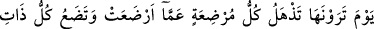
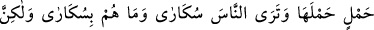
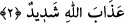
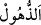
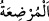
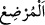


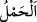
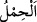
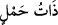
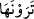
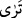
meydana gelecek olan deprem büyük bir şeydir. Onu vasfetmek imkânsızdır. Şu halde
azabdan kurtulmak için takvâya sarılmak lâzımdır.
2. Onu gördüğünüz gün, her emzikli kadın emzirdiği çocuğu unutur, her gebe
kadın çocuğunu düşürür. İnsanları da sarhoş bir halde görürsün. Oysa onlar sarhoş
değillerdir; fakat Allah’ın azabı çok dehşetlidir!
“Onu gördüğünüz gün,” yâni o zelzeleyi gördüğünüz vakit “her emzikli kadın
emzirdiği çocuğu unutur,”
“__WORD__ kişinin dehşete kapılıp meşgul olduğu işi unutmasıdır. “__WORD__ bilfiil emziren
kadın demektir. “__WORD__ “ ise emzirme fiilini o anda yapmasa da emzikli kadın demektir.
“Hâiz (hayız görmek âdeti olan kadın)” ve “Hâiza (bilfiil hayız gören)” kelimeleri de
böyledir. Çocuğun (canlı varlıklar için olan) “__WORD__” ile değil de (cansız varlıklar için
olan) “__WORD__” ile ifâde edilmesi, unutmanın ne kadar fazla olduğunu ve annenin çocuğunun ne
olduğunun bile hatırına gelmediğini belirtmek içindir. Yani anne, korkusundan ve kendi
derdine düştüğü için, göğüslerini ağzına vererek emzirmekte olduğu çocuğunu şaşkınlık
içinde unutur. Yâni dünya hayatında böyle bir şey olsa süt emziren kadın, daha
emmesini tamamlamamış bile olsa emzirdiği çocuğu unutur.
“her gebe kadın çocuğunu düşürür.” Yâni kendisini kaplayan sıkıntının şiddetinden
dolayı müddeti tamam olmadığı halde karnındaki cenini atar ve düşürür.
“__WORD__, karında veya ağacın başında olan şey demektir. “__WORD__ ise sırtta olan şey
(yük) anlamındadır.
et-Te’vîlâtü’n-Necmiyye’de der ki: “Burada eşyanın asıllarına işâret edilmektedir.
Her şeyin bir maddesi, asıl unsuru vardır. Bu onun melekûtudur ki o yavrusunu/bebeğini
mülk âleminden emzirir. Onu unutması, emzirme istîdadının yok olmasıdır. “__WORD__ (gebe)”, heyûlâ (ilk madde/ilk cevher) adı verilen şeydir. Çünkü o sûretleri taşır. Buna
göre âyetteki ifâdenin işârî mânâsı, heyûlâ mülkleri, şehâdet âlemi ile ilgili taşıdığı
sûretleri düşürür/doğurur, demek olur.
“İnsanları da” mahşerde bekleyenleri de “sarhoş” yâni sanki onlar sarhoşmuş gibi
“bir halde görürsün.”
“__WORD__ (gördüğünüz)” ifâdesinde hitap çoğul olarak geldikten sonra burada “__WORD__(görürsün)” şeklinde müfred/tekil olarak gelmiştir. Çünkü deprem insanlar için farklı
bir şey olduğundan herkes onu görür. Sarhoşluğun tesiriyle kendilerinde hâsıl olan